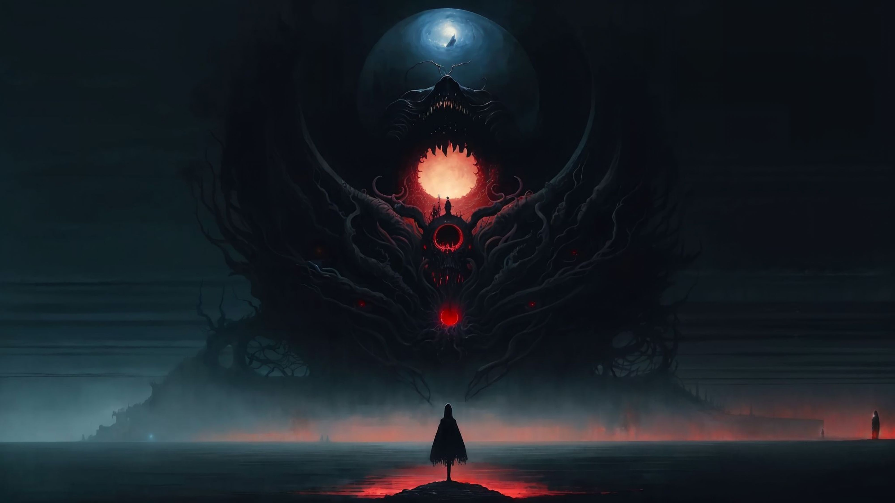

Awake
A Kingdom Death Tale
\(\infty\) : Awake
Cogito, ergo sum
…and prop yourself up on the hard, damp surface beneath you. Something… something feels wrong. Hands move instinctively – cautiously probing for the intrusion at the behest of one subroutine that, task complete, falls back among billions of writhing kin that labor within the emergent cathedral formed from an uncountable array of taut chromatic threads. They murmur indecipherably, weaving a Rorschach loom deep into the static hum of an endless sprawling labyrinth below. Hands clench in concert – knuckles forming in flight – and begin the labor of rubbing away the thick, pitch-like sap that blinds you from the world. The darkness shudders and a horizon ruptures forth – spilling uncalibrated brilliance onto a virgin charcoal canvas – as the first photons smash uncaringly into their hibernating lover’s perfect grasping hands, hewn by millennia to receive them. Black jaws squeal momentarily then snap shut to ward off the spreading incandescent rot. Hands return once more, their work unfinished. As the knuckles knead and grind, countless phosphenes spawn, dance vibrantly, and die. A horizontal crack tentatively forms anew, flutters briefly in resistance, and then opens…
…to a sea of dark marble stone faces that extend out in all directions from the ashen and cracked ground below. Each face etched within the marble earth is unique, and your eyes lap greedily at the novel stimuli before the well quickly runs dry against a dark fading haze extending in all directions. Lethargic pulses and chaotic flickers of light sing out to one another from their perches within several dozen tarnished and heavy-looking lanterns that lie scattered haphazardly around you. Flames courageously slash and gouge impotent scars against the gloom’s surface before being quickly subsumed within its boundless polyphagic maw. The distant horizon bleeds pitifully into the twilight above. Glancing upward you subconsciously seek a constant engrained within the germ of your genetic lineage. You feel a deep pit of unease and confusion – It is not there. You lean forward – eyes strain their fibrous bridles, but find no purchase for the seam that separates one part of the formless space before you from another. Vertigo briefly sets in as your mind slowly begins to sink into the infinite sprawling vacuum. Discordance evokes a primal Stygian dread as sensory perception comes to conflict with that which is known.
The umbral space before you begins to st r e t c h

The low roar of an ocean fills your ears as the dull hammering beat of your heart grows louder, deafening you, stifling the chorus of pleas from reactive counter-measures as signal decays into a rising static tide. Glossolalia drips mercury-hot across your skin as the indiscernible cicadic chatter of a million voices rave the clarion call of the insane. Of Machin Shin, The Black Wind. The beckoning void reaches out to you, enveloping you, all-encompassing, all-consumi-
Response
Potential
Engagement
Magnocellular Exultation
Perturbations in the periphery of your visual field scream out along ancient intention lines below to an older paranoid sibling who awakens with a slumbering roar, deafening the babble of the memetic death-spiral feedback loop within the cerebrum. The voices spiral out in chaotic gyres, growing dimmer as they lose coherence and scatter harmlessly upon the bone-dry wind.
Your head snaps quickly to focus on this disturbance and you see others – like yourself – spread out in the murk, sitting up, looking around, rubbing dark ink from their eyes. A few huddle together, one helping another to his feet. Your meandering eyes halt abruptly – pools of dark ink sloshing quietly against another – as you stare directly into the eyes of one sitting away from the others and closer to you. His gaze narrows briefly but quickly relaxes upon seeing your open expression. A moment passes. Small pockets depress the contours of his cheeks and the corners of his mouth turn upwards into a hesitant smile. Reflexively, your eyes move downwards in response, and, in transit, a saccadic mask deceives you and they arrive at their destination empty-handed. The lack of concordance between expectation and reality takes a fraction of a second to materialize.
A thin dark liquid spurts in a double exposure across the fading face you had glimpsed. Time slows in unison with the fluid’s passage, which pauses briefly at the peak of its lazy parabolic arc, and turns with a sigh to await the fall. An abyssal seed soars unimpeded into this plane on eldritch wind, takes root, germinates, and begins to bloom deep within. Your chest heaves against its newfound prison, your breath becoming ragged and uneven. Hyperventilation sets in as consciousness attempts to parse the frantic, abstract imagery of the subconscious.
The headless torso slumps forward, slamming violently down – pinned crudely into the chiseled ground by an enormous human-like hand. Viscera oozes between the White Lion’s dexterous fingers – a simulacrum of rotten human fruit. He has come to feast. Muscles rippling, eyes glinting with dangerous intelligence, it pivots smoothly towards another, who had only just begun rubbing the ink from his eyes, deftly cradling one hand around its prey’s face, another enclosing still-rubbing arms, and with unnecessary glee, sharply jerks the head off. The White Lion stands on hind legs and bellows – delighting in the ecstasy afforded apex predators – and begins the slaughter.
Your unconscious backpedaling meets temporary resistance as you stumble into three others – the same ones you had seen together earlier – who embrace you in their trembling bosom of arms and rags to cower behind a meager shield of inadequate cover among a few torso-sized boulders. A hollow serenity fills you as the gore and carnage of the beast become a mere visual and auditory display, safely compartmentalized from the screaming and panicked signaling of other neural systems.
You look at the others, who paint a shifting scene of anguish, panic, and despair. You turn instinctively towards the others and lock eyes – you have no language with which to comfort one another. But what comfort is there in certain death? One who had been rocking back and forth on the ground with their arms around their knees slowly rises to their feet clutching something with white-knuckled hands. She opens them stiffly to reveal a bloodied shard of stone, taken from one of the fractured stone faces beneath them where the lion had first announced his presence.
Hope in the face of hopelessness.
You lock eyes with the others and your steeled gazes cut the Gordian knot. The scope and profundity of the absurd reality before you clarifies. What choice is there but to fight? To cower before death’s gaze is to diminish the spirit – far better to look it in the eye and shout defiantly. For there is hope where there is courage. You and the other two quickly take to the ground, scrounging for similar tools with which to arm yourselves. As you stand you suddenly realize the shocking stillness of the quiet around you.
No others remain but you and your meager cohort. And the White Lion, of course. He sits patiently several stones’ throws away, as if waiting for you to wake from your reverie and acknowledge the reality of the situation before its termination. A cruel sadism that seems unnecessary for fitness – but perhaps prolonging execution constitutes a form of bootstrapping when training the networks responsible for hunting, stalking, and killing prey.
The lion stands, pauses for a moment to sniff the air cautiously, then charges.
Epinephrine and norepinephrine flood your body, causing muscles to tense, mouth to dry, eyes to dilate, and your mind to clear. The lion seems to slow as each breath becomes loud in your ears. As the lion prepares to pounce he is startled by your looks of calm resolve and stutters in an attempt to abort. A demented cackle cuts through the air – you are unsure whether you or your peers are the origin.
You and the others lift the shards above your head and scream as you sprint with abandon towards the confused beast. Enthralled with such bestial triumph there is no room for petty thoughts of mortality. There is only room for glory. Only room for victory.
The world is a series of flashes, screams, roars, pain, and rage as you and the three others mercilessly stab the White Lion as it backpedals, slashing impotently, unable to adequately defend itself on all sides.
A woman, who holds no name as there is yet no language, seizes an opportunity as the lion limps weakly, blood leaking from myriad gashes and cuts in its flanks, and places the mortal blow. As the lion rears up on hind legs to bat away another attacker, the muscles in her arm ripple and time slows, the stone shard spinning end-over-end, until it collides with the lion’s groin – obliterating its genitals completely.
As the dust settles and quiet returns, you and the others shatter the stillness with elated bellows and sapien ululations, embracing one another, jumping and whooping with unrestrained joy. Together you proceed to harvest several juicy spherical bits from the lion, use your sharpened stones to crudely hack away his once prideful mane, and set off together in search of shelter. For if the White Lion could survive here – at least for a time – so could they.
After an indeterminate period, you see a faint glow in the distance that continues to grow in the dark fog as your group moves closer. Emboldened – and without much choice – you proceed towards it and gasp along with the others when a towering stack of lanterns whose thin climbing peak seems to defy intuitive physics materializes out of the haze. Shapes move in the darkness and a familiar icy fear reaches up quickly to embrace you. But…
…they are like you.
They pause cautiously and then notice your rags, shaking hands clutching shattered stone shards. One shouts excitedly to the others, rapidly joining together a series of confusing and challenging syllables, pointing to the lion’s mane wrapped around She-Who-Slayed-Him. The same one steps out towards the others slowly and lowers a much more impressively crafted bone knife to the ground and then raises his hands towards you. You look to the others, who imperceptibly nod, and you slowly bend to set your stone shards on the ground and begin awkwardly walking over together. As you step closer you see there are only six people in total and, as your eyes take in each unique face, the look of hope at your arrival is palpable. You are needed here.
You are welcome here.